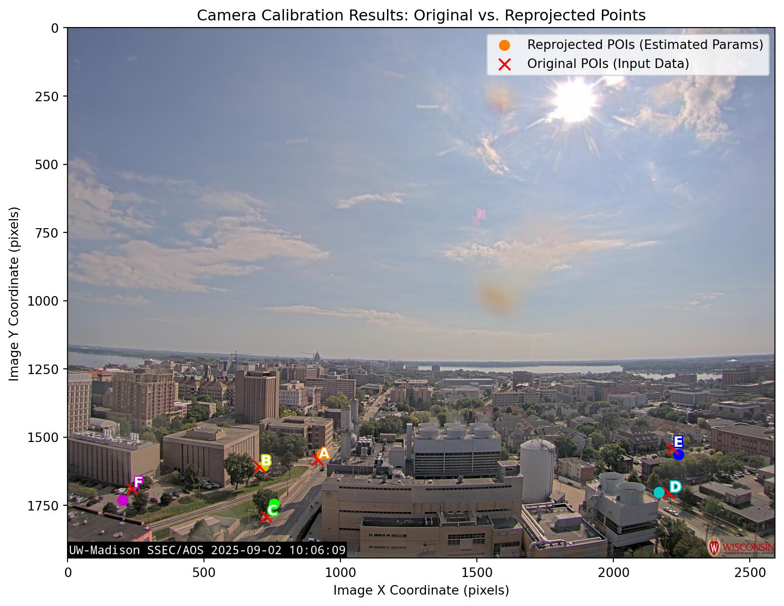
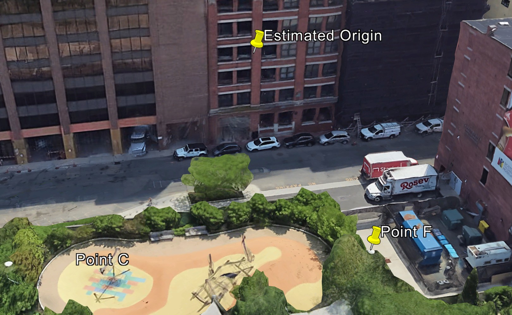
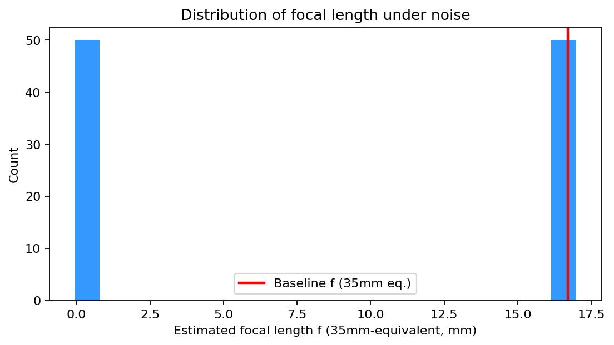
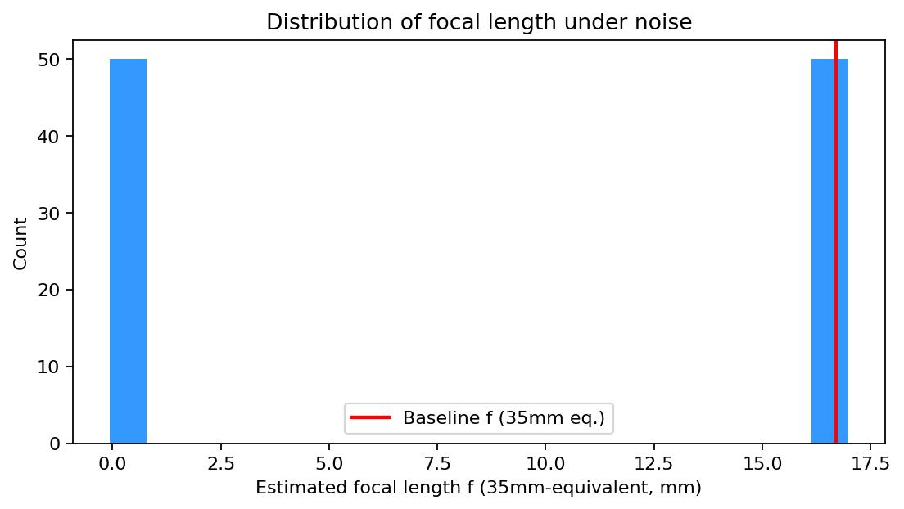
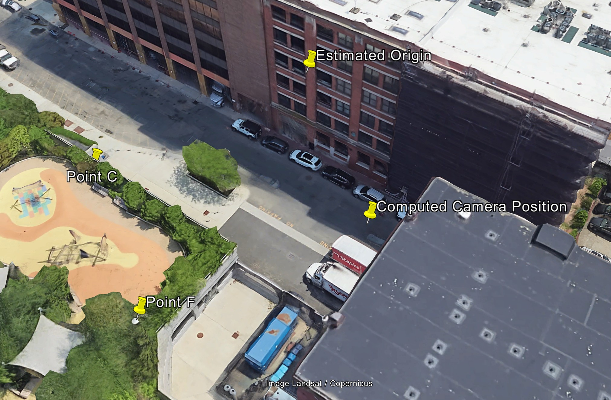
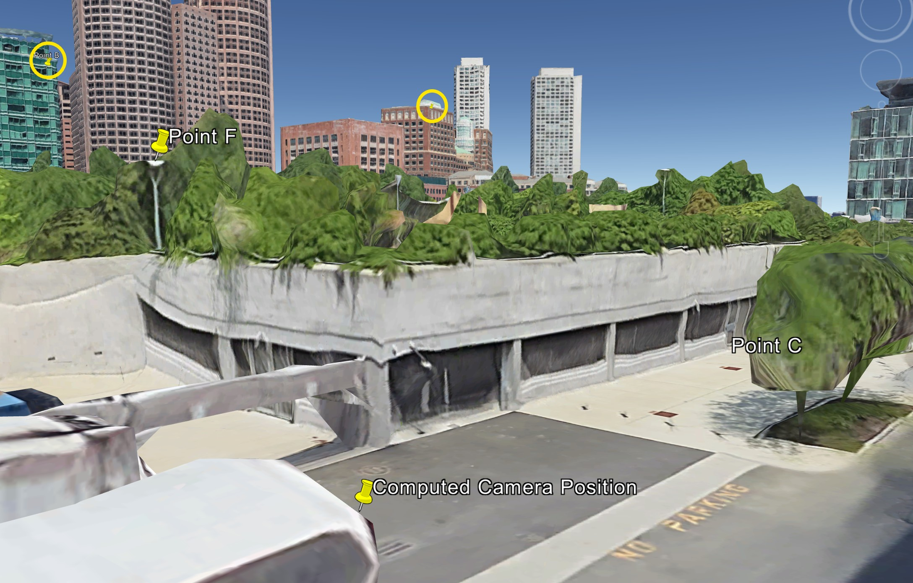

For this project, I adapted this camera calibration and projection code to perform uncertainty analysis. Then, I solved for the real-world coordinates of a live webcam.
My code runs all-in-one-go, downloading the images, performing the calibration/projection and uncertainty analysis, and generating visualisations for both the given image and a live webcam in Boston. There is randomness in each run by design, but the raw output of the sample run I reference throughout this post is quite representative of the typical result.
Part 1: Known Data
Given an image from the University of Wisconsin-Madison and a set of six known coordinate/pixel pairs, the provided code computed the most likely real-world camera position and re-projected the points onto the image from the computed camera position.
I added a 3D visualisation to more clearly see the points and their relative positions in space.
click to toggle code snippet
def make_spin_gif(fig, ax, gif_path, fps=30, seconds=10, dpi=96):
def update(angle):
ax.view_init(elev=20, azim=angle)
return ax,
frames = np.linspace(0, 360, fps * seconds)
anim = animation.FuncAnimation(
fig,
update,
frames=frames,
interval=1000 * seconds / len(frames),
blit=False,
)
anim.save(gif_path, writer="pillow", fps=fps, dpi=dpi)
compress_gif(gif_path)
def compress_gif(file):
subprocess.run(
[
"ffmpeg", "-y",
"-i", file,
"-vf", "split[s0][s1];[s0]palettegen=max_colors=64[p];[s1][p]paletteuse=dither=bayer:bayer_scale=3",
"temp.gif",
],
stdout=subprocess.DEVNULL,
stderr=subprocess.STDOUT,
)
os.replace("temp.gif", file)
# Build visualization figure
fig0 = plt.figure(figsize=(8, 6))
ax0 = fig0.add_subplot(111, projection="3d")
# Plot the input 3D ENU points
ax0.scatter(
all_poi_enu[:, 0],
all_poi_enu[:, 1],
all_poi_enu[:, 2],
s=60,
marker="x",
color="#0080ff",
linewidths=2,
depthshade=False,
label="Original 3D Points",
)
for i in range(num_points):
ax0.text(
all_poi_enu[i, 0],
all_poi_enu[i, 1],
all_poi_enu[i, 2] + 0.5,
labels[i],
color="white",
fontsize=10,
weight="bold",
path_effects=[patheffects.withStroke(linewidth=2, foreground="#0080ff")],
)
# Plot the single estimated camera location (red X)
ax0.scatter(
cam0_enu[0], cam0_enu[1], cam0_enu[2],
s=120,
marker="x",
color="#ff0000",
linewidths=3,
label="Baseline Camera",
)
ax0.set_xlabel("East (m)")
ax0.set_ylabel("North (m)")
ax0.set_zlabel("Up (m)")
ax0.legend()
fig0.tight_layout()
# GIF output path
orig_points_gif = f"{data["out"]}/original_points_spin.gif"
make_spin_gif(
fig=fig0,
ax=ax0,
gif_path=orig_points_gif,
)

The first way to test the uncertainty of the calibration was to perform the analysis six times, each time leaving out one of the points. I visualised the results using the same spinning plot generation code. Each coloured and labelled circle represents the computed camera position with that point left out.
click to toggle code snippet
loo_centers_enu = np.zeros((num_points, 3), dtype=np.float64)
loo_centers_gps = np.zeros((num_points, 3), dtype=np.float64)
for i in range(num_points):
mask = np.ones(num_points, dtype=bool)
mask[i] = False
poi_enu_sub = all_poi_enu[mask]
poi_xy_sub = all_poi_xy[mask]
# if only 5 points → duplicate first point to make 6
if poi_enu_sub.shape[0] < 6:
poi_enu_sub = np.vstack([poi_enu_sub, poi_enu_sub[0]])
poi_xy_sub = np.vstack([poi_xy_sub, poi_xy_sub[0]])
k_i, dist_i, r_i, t_i = estimate_camera_params(
poi_enu=poi_enu_sub,
poi_xy=poi_xy_sub,
frame_size=frame_size,
intrinsics_estimate=initial_k,
distortion_estimate=None
)
center_enu = camera_center_enu(r_i, t_i)
loo_centers_enu[i] = center_enu
lat_i, lon_i, alt_i = pm.enu2geodetic(
center_enu[0], center_enu[1], center_enu[2],
origin_gps[0], origin_gps[1], origin_gps[2]
)
loo_centers_gps[i] = [lat_i, lon_i, alt_i]

We can see that removing points D and E had the greatest effect. This makes sense given that they're further away, so they're providing useful information in addition to the A,B,C,F cluster, where those points are comparatively close. Removing C also has a big effect, however. I suspect this is because A, B, and F are about the same distance from the camera and in something close to a straight line; C lies perpendicular to that line.
Next, I tested the stability of the camera position computation by adding random noise to each of the 3D coordinates and the pixel coordinates, and amalgamating 100 such trials.
click to toggle code snippet
num_trials = 100
noise_centers_enu = np.zeros((num_trials, 3), dtype=np.float64)
noise_focals = np.zeros(num_trials, dtype=np.float64)
for i in range(num_trials):
noisy_enu = all_poi_enu + np.random.normal(0.0, 1.0, all_poi_enu.shape)
noisy_xy = all_poi_xy + np.random.normal(0.0, 1.0, all_poi_xy.shape)
k_n, dist_n, r_n, t_n = estimate_camera_params(
poi_enu=noisy_enu,
poi_xy=noisy_xy,
frame_size=frame_size,
intrinsics_estimate=initial_k,
distortion_estimate=None,
should_print = False,
)
noise_centers_enu[i] = camera_center_enu(r_n, t_n)
noise_focals[i] = k_n[0, 0]
Here I ran into a problem: on most runs, two to ten outliers would skew the resulting projection so much that I couldn't produce reasonable plots even at logarithmic scale. To fix this, I rejected outliers using the interquartile range method.
click to toggle code snippet
q1, q3 = np.percentile(noise_focals, [25, 75])
iqr = q3 - q1
lower = q1 - 1.5 * iqr
upper = q3 + 1.5 * iqr
valid_mask = (noise_focals >= lower) & (noise_focals <= upper)
The run referenced in this blog post removed nine outliers out of 100 samples, leaving 91. With this done, I could generate a useful point cloud:

It's interesting that the estimates stay at roughly the same altitude, with variation mostly in the North-South and East-West directions. A small secondary group of estimates forms an approximate plane about 100 metres below the baseline camera, with similar variation in both horizontal dimensions. It would be cool to find out what caused this secondary plane and why altitude is staying so stable relative to the horizontal dimensions, but I wasn't sure how to find that out.
Finally, I generated a histogram showing estimated focal length. The given code computed focal length in pixels, but since it's easier for me to reason about focal length
in millimetres (full-frame equivalent), I changed the code to do that instead, multiplying by a new ff_scale.
click to toggle code snippet
# Get image dimensions (height, width)
frame_size = (default_img.height, default_img.width) # OpenCV uses (height, width)
full_frame_width_mm = 36.0
ff_scale = full_frame_width_mm / frame_size[1] # mm per "fx pixel" in 35mm-equivalent
# ...
# omitted given code for brevity
# ...
focal_eq_mm = noise_focals[valid_mask] * ff_scale
baseline_fx_eq_mm = k_matrix[0, 0] * ff_scale
The noise isn't having anywhere near as great of an effect on focal length estimation as it had on position estimation. We're estimating just under 18.5mm full-frame equivalent, which for context is about halfway between an iPhone's normal lens and ultrawide. That seems reasonable if we look at the image again. There's even a little fisheye distortion of the horizon, which you would expect to see in an uncorrected image from most lenses of this focal length.
Part 2: Real-world cameras
I did the same process for a webcam image from Boston. This time I had to create the earth-coordinate and pixel-coordinate lists myself. Firstly, I found the corresponding scene in Google Earth. (I admit I needed a little help identifying buildings from ChatGPT!)
I chose six points, mousing over them in an image viewer to get the pixel coordinates, and obtaining matching real-world coordinates by placing pins in the Google Earth Pro desktop app.
(That last one was much more visible in the night image I was seeing when working on this part.)
I used the same method to make a reasonable estimate of the camera's position:
This let me produce the following table, analogous to the one provided for the Wisconsin photo, where the ids 1 to 6 correspond to points A to F:
| id | img_x | img_y | map_lat | map_lng | map_altitude |
|---|---|---|---|---|---|
| 1 | 1239 | 525 | 42.355867 | -71.050269 | 76 |
| 2 | 823 | 523 | 42.354044 | -71.050964 | 63 |
| 3 | 1516 | 1017 | 42.352658 | -71.048958 | 16 |
| 4 | 194 | 210 | 42.353069 | -71.052536 | 151 |
| 5 | 1065 | 538 | 42.359047 | -71.053572 | 164 |
| 6 | 671 | 792 | 42.352522 | -71.049256 | 25 |
By moving all the logic from Part 1 into a function taking this data, the origin, the initial FOV estimate, and the image, I was able to use the exact same logic to compute all the same results for the Boston photo.
click to toggle code snippet
def main():
datas = [
{
# Define the GPS coordinates (latitude, longitude, altitude) approximately for the camera's origin point
# This point will serve as the reference for the local East-North-Up (ENU) coordinate system
"origin": {
"latitude": 43.07063697146,
"longitude": -89.40685704184578,
"altitude": 263 + 204*0.3048,
},
# Construct the full path to the CSV file containing point correspondences
# Using the raw content URL from GitHub for direct access
"path_to_csv": 'https://raw.githubusercontent.com/shrnik/contrails/main/uwisc/east/matches.csv',
"url": 'https://raw.githubusercontent.com/shrnik/contrails/main/uwisc/east/DEFAULT.jpg',
# Define an initial guess for the camera's vertical field of view (FOV) in degrees.
# This is often known approximately from camera specifications or can be estimated.
"vfov_deg_estimate": 63.59, # Example estimated vertical FOV
"out": "wisconsin",
},
{
"origin": {
"latitude": 42.352397,
"longitude": -71.048881,
"altitude": 14 + 14,
},
"path_to_csv": "./boston_points.csv",
"vfov_deg_estimate": 85,
"url": 'http://sleeper.dyndns.org/record/current.jpg',
"out": "boston",
},
]
for data in datas:
process_data(data)
if __name__ == "__main__":
main()


 

And the computed camera position, as viewed in Google Earth Pro:
 It's too far south (Point E is occluded by a building) and too low, but a decent approximation. My estimated origin point is in all likelihood closer to the real position. I did try looking for the camera on Google Street View, but it's behind a window and I couldn't find it.
Besides any possible errors on my part when mapping the pixel coordinates to real-world coordinates (which certainly could've caused this), I think it's a trickier scene. If we take another look at the "leave-one-out" camera estimations and the point cloud of estimates with added noise, we can see there's less room to manouevre than there was in the Wisconsin case.
On the left, it's clear that removing any point except D is enough to sabotage the estimation, and on the right we no longer get a well-behaved plane with a secondary outlier plane, but rather several random-seeming outliers and a roughly linear grouping up and to the north-west of the camera. The focal length histogram also has strange behaviour, with only two buckets: below 0.5mm full-frame equivalent (obviously wrong - 9mm is about the widest possible), and about 17mm. The latter guess is plausible, but to my eye that's a little too wide. I think the real focal length is a bit narrower.